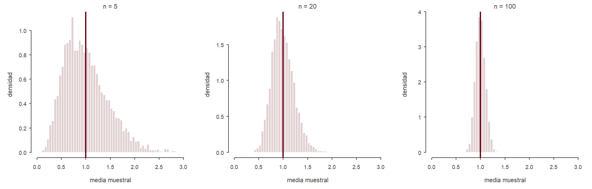
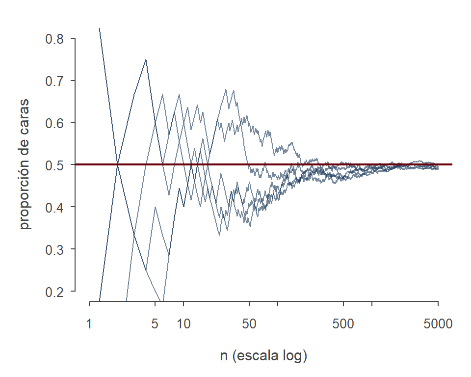
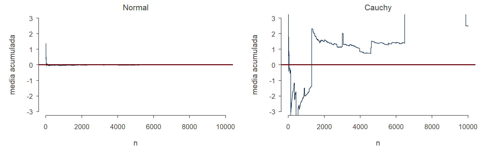
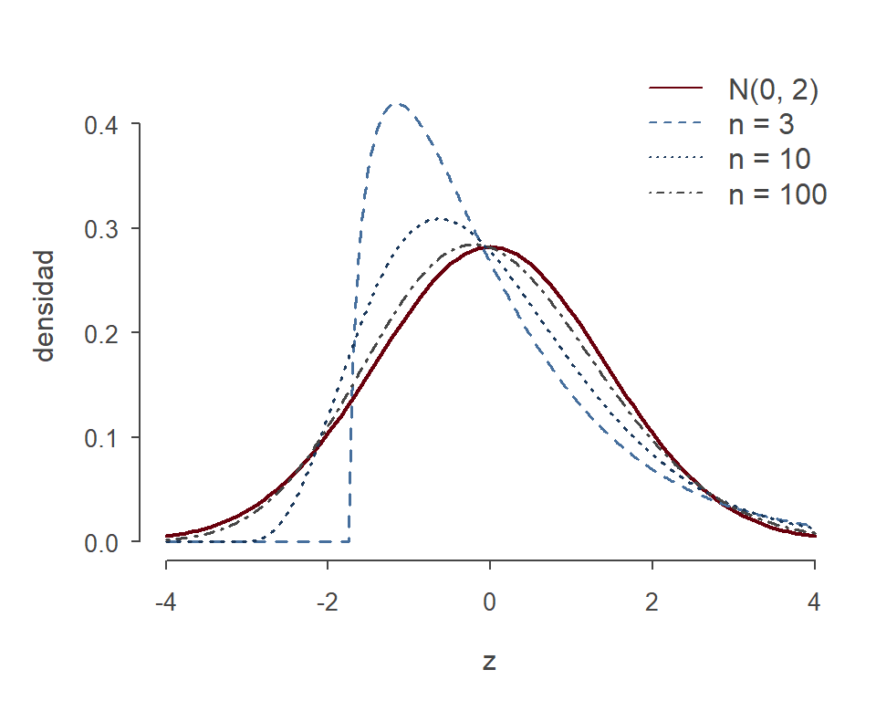

salario <- c(37.93, 40.87, 14.18, 16.83, 33.17, 29.81, 54.62, 43.08, 14.42, 14.90,
21.63, 11.09, 10.00, 31.73, 11.06, 18.75, 27.35, 24.04, 36.06, 23.08)
educ <- c(18, 18, 13, 16, 16, 18, 16, 18, 12, 16,
18, 16, 13, 14, 12, 16, 14, 16, 18, 16)Clase 03: Muestreo y Teoría Asintótica
Estadística y Econometría
UCH / INE
2026-10-18
Contenidos de hoy
De la probabilidad a la estadística
Cambio de pregunta
En las dos clases anteriores conocíamos la distribución y nos preguntábamos por la probabilidad de los eventos. Ahora damos vuelta la pregunta: observamos datos y queremos aprender sobre la distribución que los generó.
“Statistics is concerned with inference on parameters from data.” (Hansen, 2022, p. 128)
Para eso necesitamos un modelo de cómo se obtuvieron los datos. El más simple, y el punto de partida de toda la teoría que veremos, es el muestreo aleatorio.
Muestra aleatoria
Definición: Muestra aleatoria
Una colección de variables (o vectores) aleatorios \(\{X_1, \ldots, X_n\}\) es una muestra aleatoria de la población \(F\) si las \(X_i\) son independientes e idénticamente distribuidas (i.i.d.), todas con distribución \(F\) (DeGroot & Schervish, 2012; Hansen, 2022).
- Independientes: \(X_i\) es independiente de \(X_j\) para \(i \neq j\).
- Idénticamente distribuidas: todas las observaciones vienen de la misma distribución \(F\).
- \(n\) es el tamaño muestral. Una “observación” puede ser una persona, un hogar, una empresa, una comuna o un país.
Notación
\(X\) (sin subíndice) es una variable con distribución \(F\); \(X_i\) es la \(i\)-ésima observación aleatoria; \(x_i\) es su valor observado.
Dos maneras de pensar la población
1. Una población finita muy grande. Hay \(N\) individuos, con \(N\) mucho mayor que \(n\), y elegimos \(n\) de ellos al azar con igual probabilidad. Es la lógica de las encuestas: la aleatoriedad la crea el diseño muestral (Hansen, 2022).
2. Un proceso generador de datos (PGD). Existe un mecanismo (un experimento, el funcionamiento de un mercado) que produce cada observación, y ese mecanismo se repite \(n\) veces. La “población” es el modelo de probabilidad que genera los datos (Hansen, 2022).
En ambos casos el objetivo de la inferencia es el mismo: usar la muestra para aprender sobre \(F\) o sobre alguna de sus características.
¿Son i.i.d. los datos económicos?
A veces es una buena aproximación; otras veces no. Hansen menciona formas de muestreo que introducen dependencia entre observaciones (Hansen, 2022):
- Muestreo estratificado, como en muchas encuestas de hogares.
- Muestreo por conglomerados (estudiantes de un mismo curso, hogares de una misma manzana).
- Datos de panel (las mismas unidades observadas en varios períodos).
- Series de tiempo y datos espaciales.
Tip
Cómo se recolectó la muestra afecta qué métodos de inferencia son válidos. Buena parte de la econometría avanzada trata de cómo hacer inferencia con estas formas de dependencia. En este curso partimos del caso i.i.d. porque es el que permite entender la lógica de fondo.
Un hecho útil: si \(\{X_i\}\) son i.i.d. y \(Y_i = g(X_i)\), entonces \(\{Y_i\}\) también son i.i.d. (Hansen, 2022).
Estadísticos, parámetros y estimadores
Parámetros y estadísticos
Definición: Parámetro
Un parámetro \(\theta\) es cualquier función de la población \(F\). Por ejemplo, la esperanza poblacional \(\mu = \mathbb{E}[X]\) (Hansen, 2022).
Definición: Estadístico
Un estadístico es cualquier función de la muestra \(\{X_1, \ldots, X_n\}\) (Hansen, 2022).
Definición: Estimador
Un estimador \(\hat\theta\) de un parámetro \(\theta\) es un estadístico que se usa para “adivinar” el valor de \(\theta\) (Hansen, 2022).
Estimador vs. estimación
La misma distinción entre \(X\) y \(x\) de la clase pasada aparece aquí (Hansen, 2022):
- Antes de ver los datos, \(\hat\theta\) es una función de variables aleatorias. Es, por lo tanto, una variable aleatoria: lo llamamos estimador.
- Después de ver los datos, \(\hat\theta\) es un número concreto: lo llamamos estimación.
La aleatoriedad de un estimador está en el proceso que generó los datos. Si repitiéramos el muestreo, obtendríamos otra muestra y otro valor de \(\hat\theta\).
Importante
Esta es la idea central de la clase: un estimador tiene una distribución. Toda la inferencia estadística consiste en entender esa distribución.
El principio de analogía
¿Cómo construir un estimador? Una regla general es el principio de analogía: si el parámetro es una función de la población, el estimador es la misma función aplicada a la muestra (Hansen, 2022).
La esperanza es el promedio en la población; su análogo es el promedio en la muestra.
Definición: Media muestral
\[\bar X_n = \frac{1}{n}\sum_{i=1}^{n} X_i\] Es el estimador estándar de \(\mu = \mathbb{E}[X]\). También se escribe \(\hat\mu\) (Hansen, 2022).
Lo mismo vale para la esperanza de cualquier transformación: el estimador análogo de \(\theta = \mathbb{E}[g(X)]\) es \(\hat\theta = \frac{1}{n}\sum_{i=1}^n g(X_i)\). Por ejemplo, el de \(\mathbb{E}[X^2]\) es \(\frac{1}{n}\sum_{i=1}^n X_i^2\).
Estimadores plug-in
Muchos parámetros son funciones de momentos: \(\beta = h\big(\mathbb{E}[g(X)]\big)\). El estimador plug-in “enchufa” el estimador análogo en la fórmula (Hansen, 2022):
\[\hat\beta = h(\hat\theta) = h\left(\frac{1}{n}\sum_{i=1}^n g(X_i)\right)\]
| Parámetro | Fórmula poblacional | Estimador plug-in |
|---|---|---|
| Varianza | \(\sigma^2 = \mathbb{E}[X^2] - (\mathbb{E}[X])^2\) | \(\hat\sigma^2 = \frac{1}{n}\sum_{i=1}^n (X_i - \bar X_n)^2\) |
| Desv. estándar | \(\sigma = \sqrt{\sigma^2}\) | \(\hat\sigma = \sqrt{\hat\sigma^2}\) |
| Media geométrica | \(\exp\big(\mathbb{E}[\log X]\big)\) | \(\exp\left(\frac{1}{n}\sum_{i=1}^n \log X_i\right)\) |
Con la media muestral y el principio plug-in podemos estimar cualquier parámetro que se pueda escribir como función de momentos.
Ejemplo con datos reales
Hansen usa una submuestra de 20 asalariadas de la Current Population Survey (EE.UU., marzo de 2009), con su salario por hora y sus años de educación (Hansen, 2022):
Hay dos maneras de mirar estos números. Podemos verlos solo como los salarios de estas 20 personas, o como una muestra aleatoria de una población más grande. La segunda es la mirada estadística: estas 20 observaciones son una ventana para aprender sobre la población (Hansen, 2022).
En R: estimadores análogos y plug-in
[1] 25.73[1] 15.7[1] 3.131907[1] 3.247658[1] 12.12692[1] 22.91765[1] 23.56Lectura de los resultados
- El salario promedio estimado es de unos $25.7 por hora y la educación promedio, de 15.7 años (Hansen, 2022).
- \(\overline{\log(\text{salario})} = 3.13 < \log(25.73) \approx 3.25\). Es la desigualdad de Jensen de la clase pasada, ahora con datos: el promedio del logaritmo no es el logaritmo del promedio.
- La media geométrica (\(\approx 22.9\)) queda más cerca de la mediana (\(\approx 23.6\)) que de la media aritmética. En distribuciones con sesgo a la derecha, como los salarios, la media geométrica suele aproximarse a la mediana, que es mejor medida del valor “típico” (Hansen, 2022).
Advertencia
Con solo 20 observaciones es difícil hacer inferencias precisas sobre la población. ¿Qué tan lejos podría estar \(25.73\) de la verdadera \(\mu\)? Para responder necesitamos la distribución muestral de \(\bar X_n\).
La distribución muestral de la media
Distribución muestral
Definición: Distribución muestral
Como un estadístico \(\hat\theta = \hat\theta(X_1, \ldots, X_n)\) es una variable aleatoria, tiene su propia distribución. La llamamos distribución muestral: la distribución inducida por el muestreo (Hansen, 2022).
Depende de tres cosas: la distribución \(F\) de las observaciones, el tamaño muestral \(n\) y la forma del estadístico. Como \(F\) es desconocida, la distribución muestral típicamente también lo es.
Hansen distingue varias maneras de estudiar la distribución de \(\bar X_n\) (Hansen, 2022):
- Su esperanza y varianza exactas.
- Su distribución exacta, suponiendo que los datos son normales.
- Su distribución asintótica, cuando \(n \to \infty\). ← el foco de hoy
Esperanza y varianza de la media muestral
Sea \(\mu = \mathbb{E}[X]\) y \(\sigma^2 = \text{var}(X)\). Por linealidad de la esperanza,
\[\mathbb{E}[\bar X_n] = \frac{1}{n}\sum_{i=1}^n \mathbb{E}[X_i] = \frac{1}{n}\, n\mu = \mu\]
Por independencia, las \(X_i\) no están correlacionadas y la varianza de la suma es la suma de las varianzas:
\[\text{var}(\bar X_n) = \frac{1}{n^2}\,\text{var}\left(\sum_{i=1}^n X_i\right) = \frac{1}{n^2}\sum_{i=1}^n \text{var}(X_i) = \frac{1}{n^2}\, n\sigma^2 = \frac{\sigma^2}{n}\]
Teorema
Si \(\mathbb{E}[X^2] < \infty\), entonces \(\quad \mathbb{E}[\bar X_n] = \mu \quad\) y \(\quad \text{var}(\bar X_n) = \dfrac{\sigma^2}{n}\) (Hansen, 2022).
Qué nos dicen estas dos fórmulas
- \(\mathbb{E}[\bar X_n] = \mu\): la distribución muestral está centrada en el parámetro. En la próxima clase llamaremos a esto insesgamiento.
- \(\text{var}(\bar X_n) = \sigma^2/n\): la dispersión de la distribución muestral cae con el tamaño muestral. La media de una muestra grande es un estimador más preciso que la de una muestra chica.
- La desviación estándar de \(\bar X_n\) es \(\sigma/\sqrt{n}\). Para reducirla a la mitad hay que cuadruplicar la muestra.
Pero media y varianza no son toda la distribución. ¿Qué forma tiene la distribución de \(\bar X_n\)? Sin suponer algo sobre \(F\), en muestras finitas en general no lo sabemos. Ahí entra la teoría asintótica.
En R: la distribución muestral, simulada
Tomamos 5000 muestras de una exponencial con media 1 (muy asimétrica) y calculamos \(\bar X_n\) en cada una:
set.seed(2026)
par(mfrow = c(1, 3))
for (n in c(5, 20, 100)) {
medias <- replicate(5000, mean(rexp(n, rate = 1)))
hist(medias, breaks = seq(0, ceiling(max(medias)), by = 0.05),
freq = FALSE, xlim = c(0, 3),
col = "#69000C2E", border = "white",
main = paste("n =", n), xlab = "media muestral", ylab = "densidad")
abline(v = 1, col = "#69000C", lwd = 2)
}
A medida que \(n\) crece, la distribución se concentra en torno a \(\mu = 1\) y se vuelve más simétrica. Lo primero es la ley de los grandes números y lo segundo, el teorema central del límite.
Convergencia en probabilidad
¿Por qué teoría asintótica?
La distribución exacta de un estimador en muestras finitas casi nunca se conoce. La teoría asintótica la aproxima por su límite cuando \(n \to \infty\) (Hansen, 2021, 2022).
Importante
“\(n \to \infty\)” no debe interpretarse literalmente: nadie tiene muestras infinitas. Es un recurso de aproximación. Nos dice cómo se comporta un estimador cuando la muestra es “grande” (Hansen, 2022).
Las tres herramientas principales son la ley de los grandes números, el teorema central del límite y el teorema de la aplicación continua. Con ellas se puede aproximar la distribución muestral de casi todos los estimadores econométricos, incluido el de mínimos cuadrados (Hansen, 2022).
Límite de una sucesión
Partimos de la definición del cálculo, para sucesiones de números (no aleatorios).
Definición: Límite
La sucesión \(a_n\) tiene límite \(a\), y escribimos \(a_n \to a\) cuando \(n \to \infty\), si para todo \(\delta > 0\) existe un \(n_\delta < \infty\) tal que \(|a_n - a| \leq \delta\) para todo \(n \geq n_\delta\) (Hansen, 2022).
En palabras: desde cierto punto en adelante, la sucesión queda tan cerca de \(a\) como queramos.
Ejemplo: \(a_n = 1/n\). Dado \(\delta > 0\), si \(n \geq 1/\delta\) entonces \(|a_n| \leq \delta\). Por lo tanto, \(a_n \to 0\).
Pero \(\bar X_n\) es aleatoria: para un mismo \(n\), puede tomar muchos valores. ¿Qué significa que “se acerque” a \(\mu\)?
Convergencia en probabilidad
Definición: Convergencia en probabilidad
Una sucesión de variables aleatorias \(Z_n\) converge en probabilidad a una constante \(c\), y escribimos \(Z_n \xrightarrow{p} c\) o \(\text{plim}_{n \to \infty} Z_n = c\), si para todo \(\delta > 0\) \[\lim_{n \to \infty} \Pr\big(|Z_n - c| \leq \delta\big) = 1\] (Hansen, 2021, 2022)
- El evento \(\{|Z_n - c| \leq \delta\}\) ocurre cuando \(Z_n\) cae a menos de \(\delta\) de \(c\).
- La definición dice que la probabilidad de ese evento tiende a 1, para cualquier \(\delta\), por pequeño que sea.
- Es decir: la distribución de \(Z_n\) se concentra en torno a \(c\) a medida que \(n\) crece.
Notación y un ejemplo
Cuidado con la notación
- El límite de la definición es un límite usual, pero aplicado a una sucesión de probabilidades, no a los valores de \(Z_n\).
- Escribe siempre la \(p\) bajo la flecha: \(Z_n \xrightarrow{p} c\) no es lo mismo que \(Z_n \to c\).
- Lo que está a la derecha de la flecha no puede depender de \(n\) (Hansen, 2022).
Ejemplo: sea \(\Pr(Z_n = 0) = 1 - p_n\) y \(\Pr(Z_n = a_n) = p_n\). Si \(p_n \to 0\), entonces \(\Pr(|Z_n| \leq \delta) \geq 1 - p_n \to 1\), así que \(Z_n \xrightarrow{p} 0\). Esto ocurre aunque \(a_n \to \infty\): lo que importa es que el valor lejano se vuelve cada vez menos probable (Hansen, 2022).
Ley de los grandes números
La desigualdad de Chebyshev
Para demostrar la ley de los grandes números necesitamos acotar la probabilidad de que una variable se aleje de su media, sin saber cuál es su distribución.
Teorema: Desigualdad de Chebyshev
Para cualquier variable aleatoria \(X\) con varianza finita y cualquier \(\delta > 0\), \[\Pr\big(|X - \mathbb{E}[X]| \geq \delta\big) \leq \frac{\text{var}(X)}{\delta^2}\] (DeGroot & Schervish, 2012; Hansen, 2022)
Vale para cualquier distribución con varianza finita. Ese es su poder y también su límite: como debe cumplirse en el peor caso, la cota suele ser muy holgada.
Demostración: Chebyshev (opcional)
Sea \(Z = X - \mathbb{E}[X]\), con densidad \(f\). Entonces \[\Pr(|Z| \geq \delta) = \int_{\{|x| \geq \delta\}} f(x)\,dx\]
En la región \(\{|x| \geq \delta\}\) se cumple \(1 \leq x^2/\delta^2\). Por lo tanto, \[\int_{\{|x| \geq \delta\}} f(x)\,dx \leq \int_{\{|x| \geq \delta\}} \frac{x^2}{\delta^2} f(x)\,dx \leq \int_{-\infty}^{\infty} \frac{x^2}{\delta^2} f(x)\,dx = \frac{\text{var}(Z)}{\delta^2}\]
La última igualdad usa que \(Z\) tiene media cero, así que \(\mathbb{E}[Z^2] = \text{var}(Z) = \text{var}(X)\). \(\blacksquare\) (Hansen, 2022)
Un corolario inmediato: si \(\text{var}(Z_n) \to 0\), entonces \(Z_n - \mathbb{E}[Z_n] \xrightarrow{p} 0\) (Hansen, 2022).
Ley débil de los grandes números
Teorema: Ley débil de los grandes números (LGN)
Si \(X_1, \ldots, X_n\) son i.i.d. y \(\mathbb{E}|X| < \infty\), entonces, cuando \(n \to \infty\), \[\bar X_n = \frac{1}{n}\sum_{i=1}^n X_i \xrightarrow{p} \mathbb{E}[X]\] (Hansen, 2021, 2022)
Demostración (con varianza finita). Sabemos que \(\mathbb{E}[\bar X_n] = \mu\) y \(\text{var}(\bar X_n) = \sigma^2/n\). Por Chebyshev, para cualquier \(\delta > 0\): \[\Pr\big(|\bar X_n - \mu| \geq \delta\big) \leq \frac{\sigma^2}{n\,\delta^2} \longrightarrow 0 \qquad \blacksquare\]
Con una demostración más técnica, el resultado se obtiene suponiendo solo que la esperanza es finita (Hansen, 2022).
Consistencia
La LGN dice que el promedio muestral converge en probabilidad al promedio poblacional. Un estimador con esa propiedad se llama consistente.
Definición: Consistencia
Un estimador \(\hat\theta\) de \(\theta\) es consistente si \(\hat\theta \xrightarrow{p} \theta\) cuando \(n \to \infty\) (Hansen, 2022).
Por la LGN, si \(\mathbb{E}|X| < \infty\), la media muestral \(\hat\mu = \bar X_n\) es un estimador consistente de \(\mu\).
Tip
La consistencia es una propiedad mínima: con una muestra lo suficientemente grande, el estimador estará arbitrariamente cerca del valor verdadero con alta probabilidad. Pero no dice qué tan grande debe ser \(n\), así que por sí sola no orienta mucho la práctica empírica (Hansen, 2022).
En R: la LGN en acción
Lanzamos una moneda justa muchas veces y vamos calculando la proporción acumulada de caras:

Cada línea es una secuencia distinta de lanzamientos. Al principio fluctúan mucho, pero todas terminan cerca de \(0.5\). Es la interpretación frecuentista de la clase 01, ahora como teorema.
¿Qué tan grande debe ser \(n\)? Chebyshev
Ejemplo: salarios por hora en EE.UU., con \(\sigma^2 \approx 430\). ¿Qué tamaño muestral garantiza que \(\bar X_n\) esté a menos de $1 de \(\mu\) con 99% de probabilidad? (Hansen, 2022)
Por Chebyshev, \(\Pr\big(|\bar X_n - \mu| \geq 1\big) \leq 430/n\):
| \(n\) | 430 | 860 | 1720 | 43 000 |
|---|---|---|---|---|
| Cota | 1 | 0.5 | 0.25 | 0.01 |
Según Chebyshev, harían falta 43 000 observaciones. La cota es correcta, pero muy conservadora porque debe valer para cualquier distribución. Volveremos a esta pregunta con el teorema central del límite y obtendremos una respuesta muy distinta.
¿Cuándo falla la LGN?
Cada supuesto del teorema importa. Hansen da tres contraejemplos (Hansen, 2022):
1. Sin independencia: un componente común. Si \(X_i = Z + U_i\), con \(U_i\) i.i.d. de media cero, entonces \[\bar X_n = Z + \bar U_n \xrightarrow{p} Z\] El promedio converge, pero al componente común \(Z\), no a \(\mathbb{E}[X]\). Pensemos en los ingresos de hogares de una misma región golpeada por un mismo shock: promediar más hogares de esa región no elimina el shock.
2. Sin distribución idéntica: heterogeneidad extrema. Si la mitad de las observaciones tiene varianza 1 y la otra mitad varianza \(n\), entonces \(\text{var}(\bar X_n) \to 1/2\), que no tiende a cero.
3. Sin esperanza finita. Es el caso de la distribución de Cauchy.
En R: la media de una Cauchy no converge
La Cauchy no tiene esperanza finita. Se puede mostrar que la media de \(n\) observaciones Cauchy i.i.d. sigue siendo Cauchy, para cualquier \(n\) (Hansen, 2022).
set.seed(42)
n <- 10000
par(mfrow = c(1, 2))
plot(cumsum(rnorm(n)) / (1:n), type = "l", col = "#19375A",
ylim = c(-3, 3), main = "Normal", xlab = "n", ylab = "media acumulada")
abline(h = 0, col = "#69000C", lwd = 2)
plot(cumsum(rcauchy(n)) / (1:n), type = "l", col = "#19375A",
ylim = c(-3, 3), main = "Cauchy", xlab = "n", ylab = "media acumulada")
abline(h = 0, col = "#69000C", lwd = 2)
Con la Cauchy, cada tanto aparece una observación enorme que vuelve a mover el promedio. Por más datos que agreguemos, el promedio no se estabiliza.
La ley fuerte (opcional)
Existe un modo de convergencia más exigente, la convergencia casi segura: \[Z_n \xrightarrow{a.s.} c \quad \text{si} \quad \Pr\left(\lim_{n \to \infty} Z_n = c\right) = 1\]
Calcula la probabilidad de un límite, en vez del límite de una probabilidad. La convergencia casi segura implica la convergencia en probabilidad, pero no al revés (Hansen, 2022).
Teorema: Ley fuerte de los grandes números
Si \(X_i\) son i.i.d. y \(\mathbb{E}|X| < \infty\), entonces \(\bar X_n \xrightarrow{a.s.} \mathbb{E}[X]\) (Hansen, 2022).
La ley fuerte es más elegante y la prefieren los probabilistas, pero para casi todos los fines prácticos en econometría basta con la ley débil (Hansen, 2022).
Teorema de la aplicación continua
Funciones continuas de estimadores consistentes
La LGN cubre promedios. Pero muchos estimadores son funciones de promedios: la varianza muestral, la desviación estándar, un cociente de medias. ¿Son consistentes?
Teorema de la aplicación continua (CMT)
Si \(Z_n \xrightarrow{p} c\) cuando \(n \to \infty\) y \(h(\cdot)\) es continua en \(c\), entonces \[h(Z_n) \xrightarrow{p} h(c)\] (Hansen, 2021, 2022)
La idea: si \(h\) es continua, cambios pequeños en el argumento producen cambios pequeños en el resultado. Si \(Z_n\) queda cerca de \(c\), \(h(Z_n)\) queda cerca de \(h(c)\).
Ejemplos: \(Z_n + a \xrightarrow{p} c + a\), \(\; aZ_n \xrightarrow{p} ac\), \(\; Z_n^2 \xrightarrow{p} c^2\). También \(a/Z_n \xrightarrow{p} a/c\), pero solo si \(c \neq 0\), porque \(a/u\) no es continua en \(u = 0\) (Hansen, 2022).
Consistencia de los estimadores plug-in
Combinando la LGN con el CMT obtenemos la consistencia de todo estimador plug-in \(\hat\beta = h(\hat\theta)\) con \(h\) continua (Hansen, 2022):
- Varianza: si \(\mathbb{E}[X^2] < \infty\), \[\hat\sigma^2 = \frac{1}{n}\sum_{i=1}^n X_i^2 - \bar X_n^2 \xrightarrow{p} \mathbb{E}[X^2] - \mu^2 = \sigma^2\]
- Desviación estándar: \(\hat\sigma = \sqrt{\hat\sigma^2} \xrightarrow{p} \sigma\).
- Cociente de medias: si \(\mathbb{E}[Y] \neq 0\), entonces \(\bar X_n / \bar Y_n \xrightarrow{p} \mathbb{E}[X]/\mathbb{E}[Y]\).
Tip
Este mismo argumento, LGN más CMT, es el que usaremos en la Unidad III para demostrar que el estimador de mínimos cuadrados es consistente.
Por qué la econometría trabaja con límites
El CMT explica buena parte de por qué la econometría prefiere los resultados asintóticos a los de muestra finita (Cameron & Trivedi, 2005).
Con límites en probabilidad, los productos y cocientes “se separan”: \[\text{plim}\,(\hat a\,\hat b) = \text{plim}\,\hat a \cdot \text{plim}\,\hat b\]
Con esperanzas, en general no: \(\mathbb{E}[\hat a\,\hat b] \neq \mathbb{E}[\hat a]\,\mathbb{E}[\hat b]\), y tampoco \(\mathbb{E}[\hat a/\hat b] = \mathbb{E}[\hat a]/\mathbb{E}[\hat b]\).
La mayoría de los estimadores econométricos son funciones no lineales de promedios, por ejemplo un cociente entre una covarianza y una varianza muestrales. Calcular su esperanza exacta suele ser imposible, pero obtener su límite en probabilidad es directo con la LGN y el CMT.
Convergencia en distribución
La LGN no basta
La LGN dice que \(\bar X_n \xrightarrow{p} \mu\): en el límite, la distribución de \(\bar X_n\) colapsa en un punto. Eso no sirve para medir la incertidumbre del estimador.
Como \(\text{var}(\bar X_n - \mu) = \sigma^2/n\), si multiplicamos por \(\sqrt{n}\) estabilizamos la varianza (Hansen, 2022):
\[Z_n = \sqrt{n}\,(\bar X_n - \mu), \qquad \mathbb{E}[Z_n] = 0, \qquad \text{var}(Z_n) = \sigma^2\]
La media y la varianza de \(Z_n\) ya no dependen de \(n\). La pregunta ahora es por la forma de la distribución de \(Z_n\) cuando \(n\) es grande.
Convergencia en distribución
Definición: Convergencia en distribución
Sea \(Z_n\) una sucesión de variables aleatorias con distribución \(G_n(u) = \Pr(Z_n \leq u)\). Decimos que \(Z_n\) converge en distribución a \(Z\), y escribimos \(Z_n \xrightarrow{d} Z\), si \[G_n(u) \to G(u) = \Pr(Z \leq u) \qquad \text{cuando } n \to \infty\] en todo punto \(u\) donde \(G\) es continua (Hansen, 2021, 2022).
- A \(G\) se le llama distribución asintótica o distribución límite de \(Z_n\).
- La condición “donde \(G\) es continua” es un detalle técnico; en los casos que veremos, \(G\) es continua en todas partes.
- Si el límite es una constante, convergencia en distribución y en probabilidad son equivalentes (Hansen, 2022).
Relación entre los modos de convergencia
\[Z_n \xrightarrow{a.s.} Z \quad \Longrightarrow \quad Z_n \xrightarrow{p} Z \quad \Longrightarrow \quad Z_n \xrightarrow{d} Z\]
(Cameron & Trivedi, 2005; Hansen, 2022)
Las implicancias inversas no se cumplen en general. Ejemplo: si cada \(Z_n\) es una extracción independiente de \(N(\mu, \sigma^2)\), entonces trivialmente \(Z_n \xrightarrow{d} N(\mu, \sigma^2)\). Pero \(Z_n\) no se acerca a ningún valor en particular: \(Z_n - Z\) tiene una varianza que no desaparece. Converge en distribución, no en probabilidad (Cameron & Trivedi, 2005).
Convergencia en media cuadrática (opcional). \(Z_n \xrightarrow{m} c\) si \(\mathbb{E}[(Z_n - c)^2] \to 0\). Implica convergencia en probabilidad y suele ser fácil de verificar: basta que el sesgo y la varianza tiendan a cero (Cameron & Trivedi, 2005). Volveremos a esta idea la próxima clase con el error cuadrático medio.
Teorema central del límite
El teorema central del límite
Teorema central del límite (Lindeberg-Lévy)
Si \(X_1, \ldots, X_n\) son i.i.d. y \(\mathbb{E}[X^2] < \infty\), entonces, cuando \(n \to \infty\), \[\sqrt{n}\,(\bar X_n - \mu) \xrightarrow{d} N(0, \sigma^2)\] donde \(\mu = \mathbb{E}[X]\) y \(\sigma^2 = \mathbb{E}[(X - \mu)^2]\) (Hansen, 2021, 2022).
- En muestras finitas ya sabíamos que \(Z_n\) tiene media 0 y varianza \(\sigma^2\). Lo que agrega el TCL es que \(Z_n\) es aproximadamente normal, y que la aproximación mejora al crecer \(n\) (Hansen, 2022).
- El único supuesto, además del muestreo i.i.d., es que la varianza sea finita. No importa la forma de \(F\): puede ser asimétrica, discreta o bimodal.
¿Por qué es tan importante?
“The CLT is one of the most powerful and mysterious results in statistical theory. It shows that the simple process of averaging induces normality.” (Hansen, 2022, p. 169)
- Es la base de casi toda la inferencia en econometría: intervalos de confianza, pruebas de hipótesis y errores estándar.
- Explica por qué la normal aparece en todas partes: muchas cantidades son, en el fondo, promedios de muchos factores.
Un poco de historia. La primera versión, para el número de caras en muchos lanzamientos de una moneda, la estableció Abraham de Moivre en un manuscrito de 1733. Las versiones más generales se deben a Lyapunov y a Lindeberg; el enunciado clásico lleva los nombres de Lindeberg y Lévy (Hansen, 2022).
Idea de la demostración (opcional)
Se usa la función generadora de momentos \(M(t) = \mathbb{E}[e^{tX}]\), que caracteriza la distribución. Supongamos \(\mu = 0\) y sea \(K(t) = \log M(t)\) (Hansen, 2022).
Como \(Z_n = \sum_{i=1}^n X_i/\sqrt{n}\) es una suma de variables independientes, su FGM es el producto de las FGM: \[K_n(t) = \log \mathbb{E}[e^{tZ_n}] = n\,K\!\left(\frac{t}{\sqrt{n}}\right)\]
Expandiendo \(K\) en serie de potencias, con \(K(0) = K'(0) = 0\) y \(K''(0) = \sigma^2\): \[K_n(t) = n\left(\frac{t^2}{2n}\sigma^2 + \frac{t^3}{6\,n^{3/2}}\kappa_3 + \cdots\right) = \frac{t^2\sigma^2}{2} + \frac{t^3\kappa_3}{6\sqrt{n}} + \cdots \longrightarrow \frac{t^2\sigma^2}{2}\]
\(e^{t^2\sigma^2/2}\) es la FGM de una \(N(0, \sigma^2)\). Por el teorema de continuidad de Lévy, \(Z_n \xrightarrow{d} N(0, \sigma^2)\). La demostración rigurosa usa la función característica, que existe para toda distribución (Hansen, 2022).
En R: el TCL con datos chi-cuadrado
Si \(X \sim \chi^2_1\) (media 1, varianza 2), la distribución exacta de \(Z_n = \sqrt{n}(\bar X_n - 1)\) se puede calcular. Comparémosla con su límite \(N(0, 2)\), como en la figura 8.1 de Hansen (2022):
# densidad exacta de Z_n: sum(X_i) ~ chi^2_n
dens_Zn <- function(z, n) {
sqrt(n) * dchisq(n + sqrt(n) * z, df = n)
}
curve(dnorm(x, 0, sqrt(2)), -4, 4, lwd = 2,
col = "#69000C", ylim = c(0, 0.45),
xlab = "z", ylab = "densidad")
cols <- c("#466F9D", "#19375A", "#464646")
ns <- c(3, 10, 100)
for (j in 1:3) {
curve(dens_Zn(x, ns[j]), add = TRUE, n = 501,
col = cols[j], lty = j + 1, lwd = 1.5)
}
legend("topright", bty = "n",
legend = c("N(0, 2)", paste("n =", ns)),
col = c("#69000C", cols), lty = 1:4)
Con \(n = 3\) la distribución es muy asimétrica; con \(n = 100\) ya es casi indistinguible de la normal.
Aplicando el TCL
En la práctica, el TCL se usa para aproximar la distribución de \(\bar X_n\) misma (Hansen, 2022):
\[\bar X_n \overset{a}{\sim} N\left(\mu, \frac{\sigma^2}{n}\right)\]
La “\(a\)” indica que es una aproximación: técnicamente significa lo mismo que el enunciado del TCL.
Ejemplo: si \(X \sim\) Exponencial con media \(\lambda = 5\) y \(n = 100\), entonces \(\bar X_n \overset{a}{\sim} N(5, 1/4)\) (Hansen, 2022).
Advertencia
El TCL es un resultado asintótico. No dice desde qué \(n\) la aproximación es buena: eso depende de \(F\). Con distribuciones muy asimétricas o con colas pesadas, como la de los ingresos, puede hacer falta una muestra bastante grande.
De vuelta a los salarios: TCL vs. Chebyshev
Con \(\mu \approx 24\) y \(\sigma^2 \approx 430\), ¿qué \(n\) basta para que \(\Pr\big(|\bar X_n - \mu| \geq 1\big) \approx 0.01\)? (Hansen, 2022)
Por el TCL, \(\Pr\big(|\bar X_n - \mu| \geq 1\big) \approx \Pr\left(|N(0,1)| \geq \frac{1}{\sqrt{430/n}}\right)\), y \(\Pr(|N(0,1)| \geq 2.58) \approx 0.01\).
| Chebyshev | TCL | |
|---|---|---|
| \(n\) necesario | 43 000 | 2 862 |
Chebyshev no usa nada de la forma de la distribución; el TCL sí aprovecha la normalidad asintótica. Por eso su respuesta es mucho más útil en la práctica (Hansen, 2022).
El TCL multivariado
El TCL se extiende a vectores. Si \(X_i \in \mathbb{R}^k\) son i.i.d. y \(\mathbb{E}\|X\|^2 < \infty\), entonces \[\sqrt{n}\,(\bar X_n - \mu) \xrightarrow{d} N(0, \Sigma), \qquad \Sigma = \mathbb{E}\big[(X - \mu)(X - \mu)'\big]\] (Hansen, 2021, 2022)
Lo mismo ocurre con la LGN: si \(\mathbb{E}\|X\| < \infty\), entonces \(\bar X_n \xrightarrow{p} \mathbb{E}[X]\) elemento por elemento.
La versión vectorial es la que necesitaremos en regresión, donde el estimador de mínimos cuadrados es un vector de coeficientes que depende de promedios muestrales como \(\frac{1}{n}\sum X_i X_i'\) y \(\frac{1}{n}\sum X_i Y_i\) (Hansen, 2021).
Más allá del caso i.i.d. (opcional)
La LGN y el TCL que vimos suponen observaciones i.i.d. Existen versiones para observaciones independientes pero no idénticamente distribuidas (Cameron & Trivedi, 2005; Hansen, 2021):
- LGN de Markov: permite que cada \(X_i\) tenga su propia media y varianza, siempre que las varianzas no crezcan demasiado rápido. Con \(\sigma_i^2 = \sigma^2\) la condición se cumple; con \(\sigma_i^2 = i\,\sigma^2\), no.
- TCL de Liapounov: permite distribuciones distintas, a cambio de exigir un momento finito de orden mayor que dos.
Recordemos el contraejemplo de Hansen: con heterogeneidad extrema en las varianzas, la LGN falla. Estas versiones precisan cuánta heterogeneidad se puede tolerar. Son las que se usan en microeconometría con muestreo estratificado o regresores fijos (Cameron & Trivedi, 2005).
Slutsky y método delta
Teorema de Slutsky
El CMT también vale para convergencia en distribución: si \(Z_n \xrightarrow{d} Z\) y \(h\) es continua, entonces \(h(Z_n) \xrightarrow{d} h(Z)\) (Hansen, 2022). Un caso particular muy usado es el siguiente.
Teorema de Slutsky
Si \(Z_n \xrightarrow{d} Z\) y \(c_n \xrightarrow{p} c\) cuando \(n \to \infty\), entonces
- \(Z_n + c_n \xrightarrow{d} Z + c\)
- \(Z_n\, c_n \xrightarrow{d} Z\, c\)
- \(Z_n / c_n \xrightarrow{d} Z / c \quad\) si \(c \neq 0\)
En palabras: podemos reemplazar una cantidad que converge en probabilidad por su límite sin cambiar la distribución asintótica.
Ojo con los nombres
Los textos no coinciden. Cameron y Trivedi llaman “teorema de Slutsky” al CMT para convergencia en probabilidad, y a este resultado “teorema de transformación” o “teorema de Cramér” (Cameron & Trivedi, 2005). Lo importante es el contenido, no el nombre.
El estadístico \(t\)
Slutsky resuelve un problema práctico: el TCL depende de \(\sigma\), que no conocemos.
Por el TCL, \(\sqrt{n}(\bar X_n - \mu) \xrightarrow{d} N(0, \sigma^2)\). Por la LGN y el CMT, \(\hat\sigma \xrightarrow{p} \sigma\). Por Slutsky:
\[T = \frac{\sqrt{n}\,(\bar X_n - \mu)}{\hat\sigma} \xrightarrow{d} \frac{N(0, \sigma^2)}{\sigma} = N(0, 1)\]
Tip
\(T\) solo depende de los datos y de \(\mu\). Esto significa que podemos usar la normal estándar para construir intervalos de confianza y pruebas de hipótesis sobre \(\mu\), sin conocer \(\sigma\) ni la distribución \(F\). Esa es la lógica de la inferencia que desarrollaremos en la clase 10.
El método delta (opcional)
¿Qué distribución asintótica tiene un estimador plug-in \(h(\hat\theta)\), por ejemplo \(\log(\bar X_n)\)? La respuesta usa una expansión de Taylor de primer orden.
Teorema: Método delta
Si \(\sqrt{n}(\hat\theta - \theta) \xrightarrow{d} N(0, V)\) y \(h\) es continuamente diferenciable cerca de \(\theta\), entonces \[\sqrt{n}\,\big(h(\hat\theta) - h(\theta)\big) \xrightarrow{d} N\big(0,\; h'(\theta)^2\, V\big)\] (Hansen, 2021, 2022)
Intuición: cerca de \(\theta\), \(h(\hat\theta) \approx h(\theta) + h'(\theta)(\hat\theta - \theta)\). Una función suave se comporta localmente como una recta, y una transformación lineal de una normal sigue siendo normal.
Ejemplos (Hansen, 2022):
- \(\sqrt{n}\,(\bar X_n^2 - \mu^2) \xrightarrow{d} N(0,\, 4\mu^2\sigma^2)\)
- Si \(X > 0\): \(\sqrt{n}\,(\log \bar X_n - \log \mu) \xrightarrow{d} N(0,\, \sigma^2/\mu^2)\)
Adelanto: cómo se usará todo esto en regresión
En regresión con un solo regresor y sin constante, el estimador de mínimos cuadrados se puede escribir como (Cameron & Trivedi, 2005) \[\sqrt{n}\,(\hat\beta - \beta) = \left(\frac{1}{n}\sum_{i=1}^n x_i^2\right)^{-1} \left(\frac{1}{\sqrt{n}}\sum_{i=1}^n x_i u_i\right)\]
- Al primer factor le aplicamos la LGN y el CMT: \(\frac{1}{n}\sum x_i^2 \xrightarrow{p} \mathbb{E}[x^2]\).
- Al segundo le aplicamos el TCL: \(\frac{1}{\sqrt{n}}\sum x_i u_i \xrightarrow{d} N\big(0, \mathbb{E}[x^2u^2]\big)\), si \(\mathbb{E}[xu] = 0\).
- Slutsky combina ambos resultados y entrega la distribución asintótica de \(\hat\beta\).
Es exactamente la estrategia de la clase 07. Las herramientas de hoy son las piezas con las que se arma la teoría asintótica de mínimos cuadrados (Cameron & Trivedi, 2005; Hansen, 2021).
Resumen de la clase
Conceptos clave:
- Muestra aleatoria (i.i.d.) y población
- Parámetro, estadístico, estimador
- Principio de analogía y plug-in
- Distribución muestral: \(\text{var}(\bar X_n) = \sigma^2/n\)
- Convergencia en probabilidad y consistencia
- Chebyshev y ley de los grandes números
- Teorema de la aplicación continua
- Convergencia en distribución y TCL
- Slutsky, estadístico \(t\) y método delta
Próxima clase:
- Sesgo y varianza de un estimador
- Error cuadrático medio
- Estimación de la varianza
- Error estándar
Para revisar
Lecturas sugeridas
- Hansen, Probability and Statistics for Economists, secciones 6.1–6.8 y 6.10, Capítulo 7 (7.1–7.11 y 7.13) y Capítulo 8 (8.1–8.11, 8.13).
- Hansen, Econometrics, Capítulo 6, como repaso compacto de la teoría asintótica que usaremos en regresión.
- Cameron y Trivedi, Microeconometrics, Apéndice A: resumen de definiciones y teoremas asintóticos, con versiones para observaciones no idénticamente distribuidas.
Referencias
Cameron, A. C., & Trivedi, P. K. (2005). Microeconometrics. Methods and Applications. Cambridge University Press.
DeGroot, M., & Schervish, M. (2012). Probability and Statistics. Pearson Education Limited.
Hansen, B. E. (2021). Econometrics. University of Wisconsin.
Hansen, B. E. (2022). Probability and Statistics for Economist. Princeton University Press.

Estadística y Econometría — Clase 03